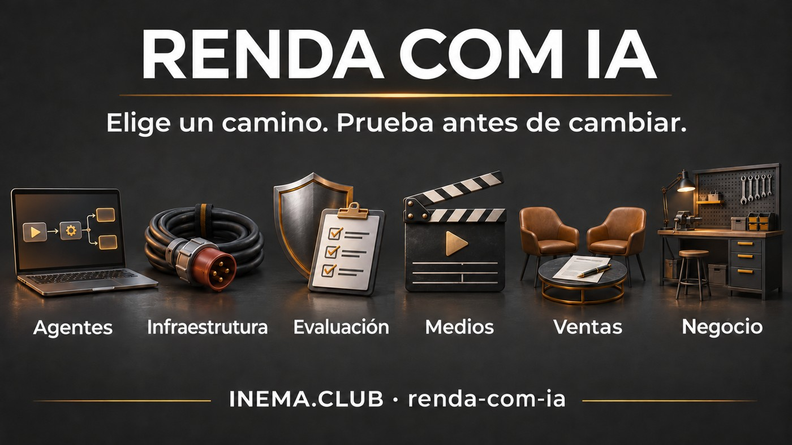

Kit gratuito de investigación profesional.
Usa la experiencia que ya tienes para investigar el siguiente paso antes de dedicar meses a una nueva profesión.
Quieres seguir siendo útil en el trabajo mientras la inteligencia artificial asume más tareas. Renda com IA es un kit gratuito para profesionales que quieren investigar alternativas sin decidirse solo por el entusiasmo o el miedo. Compara caminos, ofrece fichas para conversar con quienes contratan y organiza una experiencia de 30 días. Puedes leer la guía y completar los documentos en una hoja de cálculo o un editor de texto; la revisión automática local es opcional. El resultado es una hipótesis mejor investigada, sin promesas de ingresos ni de contratación.

El video en portugués está en producción. Mientras tanto, ya puedes usar la guía y el kit.
Cuando producir texto o código se vuelve más fácil, el problema puede cambiar: entender el pedido, decidir una prioridad, revisar el resultado o ganarte la confianza del cliente. Ese punto que bloquea el resultado es el cuello de botella.
Ejemplo ficticio: una empresa de mantenimiento recibe solicitudes incompletas. La IA puede organizar los mensajes. Alguien todavía debe definir qué información falta, revisar la respuesta y realizar la visita. Conocer ese trabajo puede ser más útil que aprender otra herramienta sin tener un problema que resolver.
2028 es un horizonte de preparación. No es una fecha exacta para el fin de tu empleo. Los caminos de abajo son hipótesis para investigar en tu contexto, sin clasificación salarial.
Un agente de IA recibe un objetivo y realiza pasos, como organizar solicitudes y sugerir la información que falta. Una persona define los límites y revisa el resultado.
Elige dos para investigar. Compara tu experiencia con la prueba que puedes producir ahora.
En el móvil, desliza la tabla para ver todas las columnas.
| Camino | Dónde entra tu criterio | Primera prueba | Qué confirmar |
|---|---|---|---|
| Implementación de agentes | Entender la rutina y verificar la entrega | Clasificación de solicitudes ficticias con revisión humana | Quién lo necesita y qué integración haría falta |
| Infraestructura | Instalar, mantener y responder por el trabajo físico | Mapa de formación y conversación con un profesional | Requisitos locales, instituciones y empleadores |
| Evaluación y seguridad | Definir aciertos y descubrir fallas | Prueba repetible con datos inventados | Conocimientos necesarios y autorización del entorno |
| Producción de medios | Elegir el mensaje y dirigir la producción | Pieza de portafolio con comentarios del público | Quién usaría la pieza y qué calidad espera |
| Ventas basadas en la confianza | Entender el compromiso y negociar una entrega posible | Conversación de investigación con notas anónimas | Cómo se realiza la compra y quién decide |
| Negocio con agentes | Encontrar clientes y mantener una entrega | Demostración de un servicio pequeño | Demanda, costo y riesgo antes de intentar escalar |
Ninguna de estas pruebas sustituye la formación profesional. El kit no enseña a realizar intervenciones eléctricas ni autoriza probar sistemas de terceros.
Sigue una solicitud en la empresa ficticia. Registra qué información falta y quién decide sobre el presupuesto.
Crea 10 solicitudes inventadas. Pídele a la IA que identifique qué falta. Una persona revisa; ninguna respuesta se envía a clientes.
Cuenta los aciertos y errores y mide el tiempo de revisión. Si la IA inventa un precio, ajusta la prueba. No afirmes que hubo ahorro antes de medirlo.
Este ejemplo es didáctico. No es un caso de ganancia real. En otra área, la prueba puede ser una pieza de medios, una prueba de calidad o una investigación sobre formación.
Es un plan de investigación; la capacitación y la contratación pueden llevar mucho más tiempo.
METR mide el desempeño en tareas de software. Su horizonte del 50% de éxito no equivale a trabajar con confianza sin supervisión en una empresa. Lee las limitaciones en METR.
El informe 2024 de DOE/LBNL estimó que los centros de datos representaron el 4,4% de la electricidad de EE. UU. en 2023 y proyectó entre el 6,7% y el 12% en 2028. Es un escenario de ese informe, no una previsión de puestos de trabajo en Brasil. Fuente: DOE.
Anthropic anunció una iniciativa para formar ingenieros de implementación con socios. Una meta anunciada no significa que haya vacantes garantizadas ni inscripciones abiertas. Fuente: Anthropic.
Fuentes y límites completos (en portugués) · Revisados el 16/11/2026. No se usaron salarios estadounidenses ni ingresos personales como promesa de resultados.
No necesitas esta parte para entender lo anterior. Los documentos funcionan sin IA; Python es opcional para revisar que estén completos.
Descargar el kit completo en ZIP
Descomprime el ZIP y abre la carpeta renda-com-ia. Entra en la carpeta kit y empieza por el documento COMECE-AQUI.md, que se abre en un editor de texto. No necesitas una cuenta, una clave, Git ni conexión para completar las plantillas.
El verificador funciona con Python 3, sin instalar bibliotecas, acceder a la red ni llamar a una IA. Muestra los campos vacíos y las decisiones no válidas. No verifica si el contenido es verdadero, si la demostración funciona ni qué profesión deberías elegir.
Instala Python 3 desde el sitio oficial python.org y habilita la opción para que el comando esté disponible en la terminal. Abre la carpeta extraída en el Explorador, haz clic en la barra de direcciones, escribe cmd y presiona Enter. Ejecuta:
py -3 scripts/conferir.py kit/exemplo.csv
Usa Python 3 instalado desde python.org o mediante el administrador de paquetes de tu sistema. En la terminal, entra en la carpeta extraída renda-com-ia (puedes arrastrarla para completar la ruta después de cd). Ejecuta:
python3 scripts/conferir.py kit/exemplo.csv
El ejemplo devuelve dos filas con 6/6 campos y decisiones ajustar e continuar. Esto significa completar todos los campos, sin evaluar carreras. Para usar tus datos, copia modelo.csv a minha-investigacao.csv en la carpeta kit, completa el archivo y ejecuta:
python3 scripts/conferir.py kit/minha-investigacao.csv
En Windows, sustituye python3 por py -3. Conserva los nombres de las columnas y los ID agentes, infra, avaliacao, midia, vendas, negocio. Decisiones válidas: continuar, ajustar, abandonar, pesquisar. El texto con comas debe ir entre comillas en el CSV. Los enlaces y las notas de evidencia pueden apuntar a tus archivos.
Código de salida 0: todos los campos completados;1: faltan campos;2: archivo no válido o no disponible. Se espera un resultado 1 con el modelo vacío. Para ver JSON, agrega --json al comando.
Si aparece “comando no encontrado”, revisa la instalación de Python. Si aparece “encabezado incorrecto”, vuelve al modelo original y conserva las siete columnas. Los archivos del kit están en portugués; la guía tiene versiones EN y ES.
El kit está listo cuando tienes una hipótesis escrita, una conversación registrada, una prueba que se puede revisar y una decisión. Completar el campo evidencia solo sirve como referencia: todavía tienes que abrir y evaluar el archivo.
Si la conversación o la prueba no se realizaron, registra esa brecha. Abandonar una hipótesis puede evitar desperdicios. La próxima experiencia parte de lo que aprendiste.